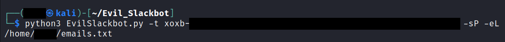

EvilSlackbot: A Slack Attack Framework
Phishing with EvilSlackbot
By DrewSec, Dec 3, 2023
Github Project Link: EvilSlackbot
Disclaimer
The following information is for educational purposes only. This post is intended for Security Professionals looking to secure their orginizations. DO NOT use any of the following techniques maliciously or without the explicit permission of all those involved.
Background
Thousands of organizations utilize Slack to help their employees communicate, collaborate, and interact. Many of these Slack workspaces install apps or bots that can be used to automate different tasks within Slack. These bots are individually provided permissions that dictate what tasks the bot is permitted to request via the Slack API. To authenticate to the Slack API, each bot is assigned an api token that begins with xoxb or xoxp. More often than not, these tokens are leaked somewhere. When these tokens are exfiltrated during a Red Team exercise, it can be a pain to properly utilize them. Now EvilSlackbot is here to automate and streamline that process. You can use EvilSlackbot to send spoofed Slack messages, phishing links, files, and search for secrets leaked in slack.
In addition to red teaming, EvilSlackbot has also been developed with Slack phishing simulations in mind. To use EvilSlackbot to conduct a Slack phishing exercise, simply create a bot within Slack, give your bot the permissions required for your intended test, and provide EvilSlackbot with a list of emails of employees you would like to test with simulated phishes (Links, files, spoofed messages)
Walkthrough
Installation:
EvilSlackbot requires both Python3 and Slackclient to run properly. To obtain Slackclient, you can simply install it using pip3.
Usage:

Token:
To use EvilSlackbot you will need an xoxb or xoxp token to authenticate to Slack's API. This is the only required flag when running EvilSlackbot.
One problem with xoxb tokens is that they are often exfiltrated during an engagement, but it is a pain to figure out what permissions are associated with them and what the token can be used to accomplish. EvilSlackbot will automatically take the token you provide it and display not only what permissions are associated with it, but also what attacks these permissions allow you to execute with Evilslackbot. If your token does not possess all of the required permissions to execute a given attack, then you will not see that attack listed when you run EvilSlackbot. To simply check the permissions and attacks available for your token, provide EvilSlackbot with your token and utilize the -c/--check flag
Attacks
List of attacks that can be executed with EvilSlackbot
List of arguments to accompany your attacks

Spoofed Messages (-sP)
With the correct token permissions, EvilSlackbot allows you to send phishing messages while impersonating the botname and bot photo. This attack also requires either the email address (-e) of the target, a list of target emails (-eL), or the name of a Slack channel (-cH). EvilSlackbot will use these arguments to lookup the SlackID of the user associated with the provided emails or channel name. To automate your attack, use a list of emails.

Example:
As an example, we'll take a look at using the Spoof message option to send a malicious link to a list of emails that are associated with users inside the bot's Slack workspace. We will have the ability to choose our sending bots name and profile image, allowing us to impersonate any bot we'd like or create a completely new bot that does not actually exist.
Next, we'll fill out all the requested input, providing a name for our evil bot, a url to an image hosted on the web, and a message containing our malicious link. Note that our message contains a hypertext link that obfuscates our actual link.
EvilSlackbot will then display what we've selected and ask if we're ready to send our message. By typing "yes", our message will automatically be sent to every slack user on the email list we provided. If the email address provided does not have a Slack user associated with it in the workspace, EvilSlackbot will ignore it and continue down the list.
Now we can go to our test Slack workspace and see that our spoofed slack message has been received
Phishing Messages (-m)
With the correct token permissions, EvilSlackbot allows you to send phishing messages containing phishing links. What makes this attack different from the Spoofed attack is that this method will send the message as the bot associated with your provided token. You will not be able to choose the name or image of the bot sending your phish. This attack also requires either the email address (-e) of the target, a list of target emails (-eL), or the name of a Slack channel (-cH). EvilSlackbot will use these arguments to lookup the SlackID of the user associated with the provided emails or channel name. To automate your attack, use a list of emails.
Example:
As an example, we'll send a phishing message containing a malicious link to a single email address.
Unlike the spoofed message attack, we will only be able to choose the message containing our malicious link. The actual bot associated with our token will deliver our message. In this example, the xoxb token belongs to calendarbot, a bot that this Slack workspace usually uses to send meeting reminders. We will send a message as this bot and include a hypertext link to our malicious site.
After reviewing our input, we'll type yes to send our phishing message to the Slack user associated with the email address we provided.
Now we can go to our test Slack workspace and see that our slack phishing message has been received
Attachments (-a)
With the correct token permissions, EvilSlackbot allows you to send file attachments. The attachment attack requires a path to the file (-f) you wish to send. This attack also requires either the email address (-e) of the target, a list of target emails (-eL), or the name of a Slack channel (-cH). EvilSlackbot will use these arguments to lookup the SlackID of the user associated with the provided emails or channel name. To automate your attack, use a list of emails.
Example:
As an example, we'll send a malicious attachment to a public Slack Channel. In this example, the xoxb token belongs to SecurityBot, a bot that this Slack workspace usually uses to send security information. We will send a message as this bot and include a malicious file attachment. Note that we did not include the # in the channel name
We will now craft our malicious message that will be sent by the SecurityBot and name our malicious attachment.
Next, we'll review our message and type 'yes' to send our malicious attachment to the designated Slack channel.
Now we can go to our test Slack workspace and see that our malicious attachment has been received in the General channel
Channel List (-cL)
With the correct permissions, EvilSlackbot can search for and list all of the public channels within the Slack workspace. This can help with planning where to send channel messages. Use -o to write the list to an outfile.
Example:
Running the channel list command and writing the results to an outfile
Secret Search (-s)
With the correct token permissions, EvilSlackbot allows you to search Slack for secrets via a keyword search. Right now, this attack requires a xoxp token, as xoxb tokens can not be given the proper permissions to keyword search within Slack. Use the -o argument to write the search results to an outfile.
Example:
Using the -s flag and a xoxp token, we start our secrets search. Note that the token permissions check shows that this token has less permissions and can only conduct the search attack.
We search for the keyword "password" and EvilSlackbot prints the results to the terminal. Remember that -o can be used to write the results to an out file.